| 3. 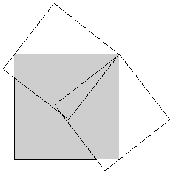 | 7. 
| |
| A = 1/2 + √5/2 = 1.618+ Found by Dudeney in 1931. | A = 11/4 + 3/√2 = 4.871+ Found by Trevor Green in September 2000. |
| 8. 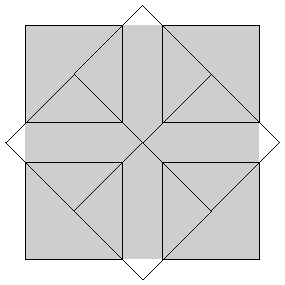 | 13. 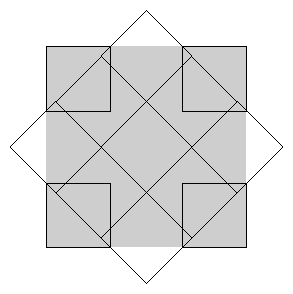 | |
| A = 3 + 2√2 = 5.828+ Found by Trevor Green in September 2000. | A = 11/2 + 6/√2 = 9.742+ Found by David Paterson in July 2002. |
| 14. 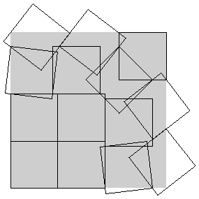 | 15. 
| |
| A = 10.860+ Found by Michael Kearney in July 2002. | A = 11.806+ Found by Maurizio Morandi in October 2010. |
| 21. 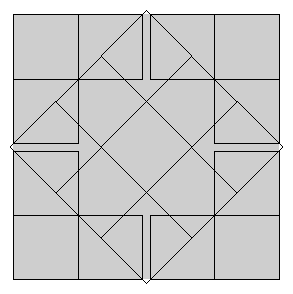 | 22. 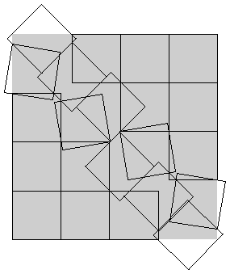 | |
| A = 17/2 + 6√2 = 16.985+ Found by David Paterson in July 2002. | A = 17.821+ Found by David Cantrell in August 2002. |
| 23. 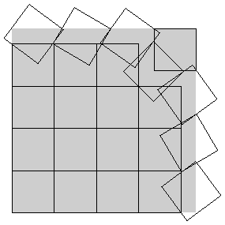 | 24. 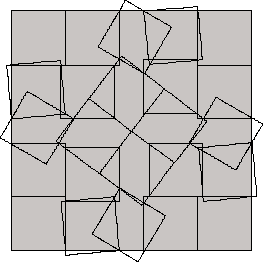 | |
| A = 19.001+ Found by David Cantrell in July 2002. | A = 20.008+ Found by Maurizio Moranndi in October 2010. |
| 31. 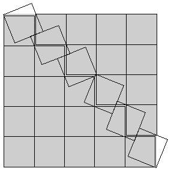 | 32. 
| |
| A = 25.527+ Found by David Paterson in September 2002. | A = 83/4 + 9/√2 = 27.113+ Found by David Paterson in September 2002. |
| 33. 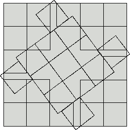 | 34. 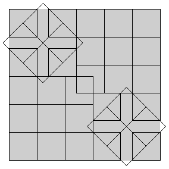 | |
| A = 27.988+ Found by Maurizio Morandi in October 2010. | A = 18 + 8√2 = 29.313+ Found by David Paterson in September 2002. |
| 35. 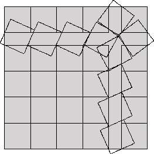 | 43. 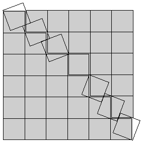 | |
| A = 30.247+ Found by Maurizio Morandi in October 2010. | A = 36.608+ Found by David Paterson in September 2002. |
| 44. 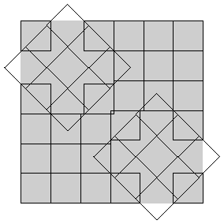 | 45. 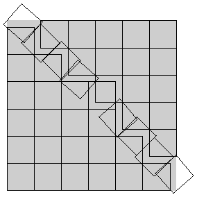 | |
| A = 41/2 + 24/√2 = 37.470+ Found by David Paterson in September 2002. | A = 39.042+ Found by David Paterson in September 2002. |